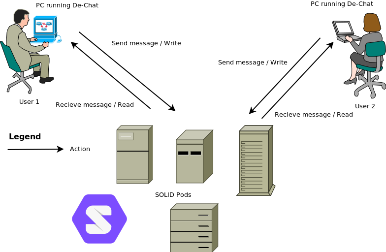

The main idea of this project is to create a decentralised chat, in other words, creating a plamtform independent of someone or something that stores the data of the users. This concept focuses on the idea of nobody obtaining or taking advantage of the information that they manage, the users must take control of who is allowed to use and see their data and where it is stored.
As software engineers we must contribute to create a platform that fulfils this axiom. The communication between users is done via pods, a sort of personal folder where the users can store the data they want, then they can select using the SOLID platform who can access that data and then the platform allows the other users access that data, we can consider that the platform acts as a keyring and each user lends their own keys, these keys grant access to the data to certain user/s.
Our main goal is to allow this communication process posible. In order to do so, we must use some sort of secure communication system and adapt it to the point it can be usable. We also must take into account other systems that may interact with the platform such as other storage systems such as image hosting services.

As we can see our application validates the permissions of the receiver to show the data to the receiver and after that check, if passed then the data is displayed.